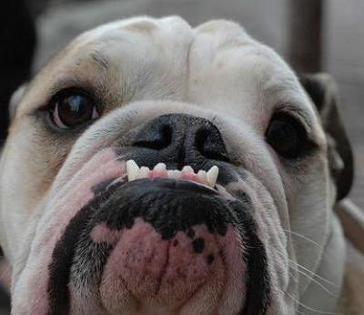
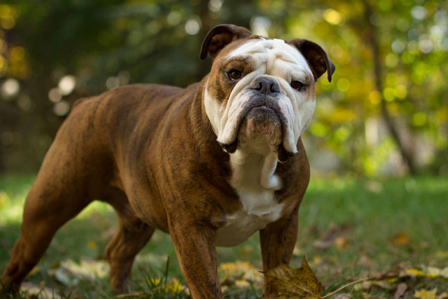

The Bulldog
This is a quick overview of the Bulldog by
Dogs Elysium
©

Personality Type
Calm
Courageous
Friendly
General Facts
Lifespan: 8-12 years
Weight: 45-55 lbs
Height: 1-1.3 ft.
Origin: England, United Kingdom

Fun Facts
Warden G. Harding was the only U.S. President
to own a bulldog in office. Its name was Oh Boy.
Popular mascots
Due to such large heads, over 80% of Bulldogs are
delivered by Caesarean section.
Many celebrities prefer to own Bulldogs
Previous Page
Copyright of
Dogs Elysium
©